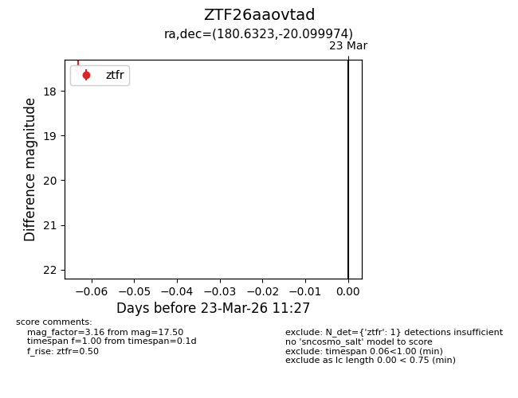
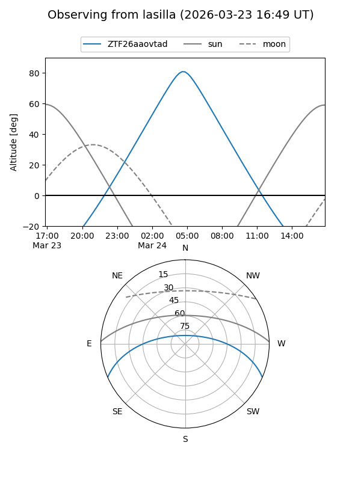
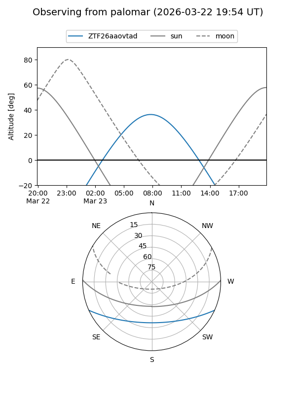

ZTF26aaovtad
Target ZTF26aaovtad at 2026-03-23 11:29
Aliases and brokers:
FINK: link
Lasair: link
ALeRCE: link
alt names
ZTF26aaovtad (ztf,fink_ztf)
Coordinates:
equatorial (ra, dec) = 180.6323,-20.09997
equatorial (HMS+DMS) = 12:02:31.74,-20:05:59.91
galactic (l, b) = (287.5782,+41.30905)
Flags:
Photometry:
last ztfr=17.50
1 ztfr detections
Lightcurve

Visibility


Additional plots